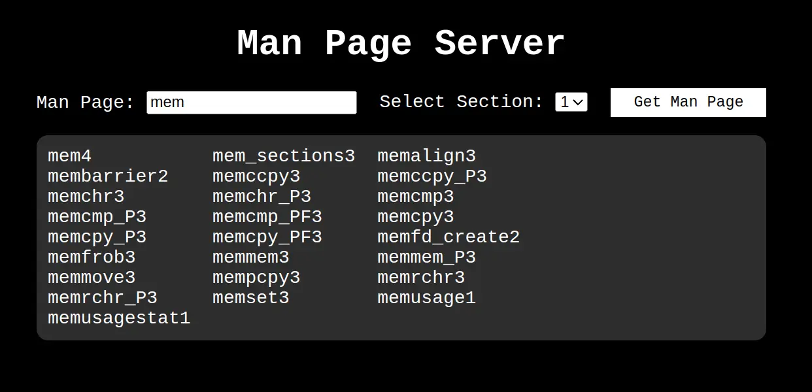
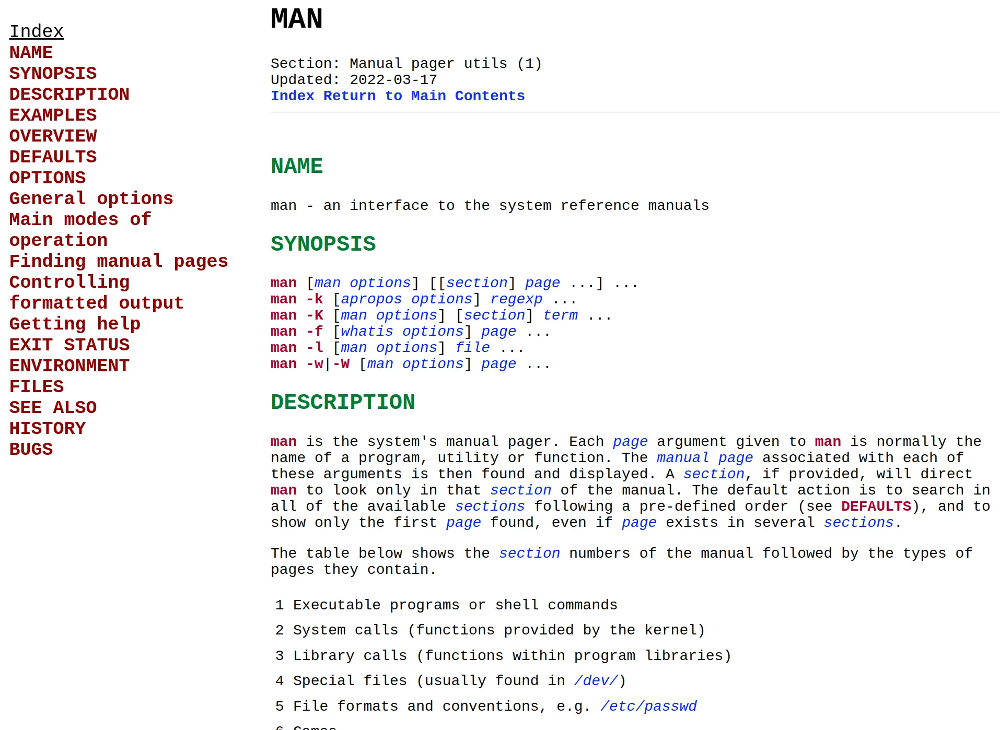
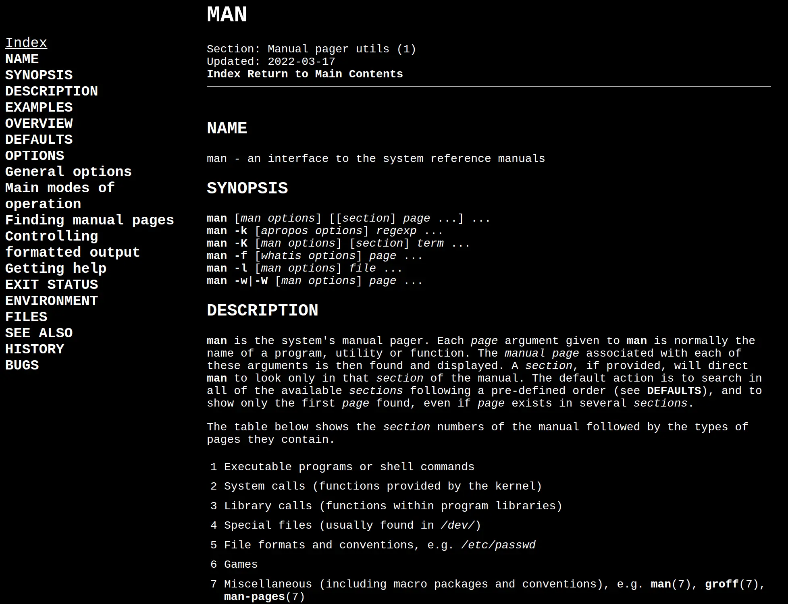

View your local man pages in your browser. Supports multiple themes and is easily extensible. Caches converted man pages, written in pure python, follows links. Supports both mac and linux.
Features
One of the most useful aspects of the terminal is being able to press tab and get suggestions or autocomplete. This feature is supported directly in the browser. This works by calling manpath -q for the directories man will look in and grabbing all the files within those directories. This is only done once, and then is cached in the browser.
This means when searching for a man page in the browser you can just hit tab to view the available pages.

Themes and Showcase
light 
default 